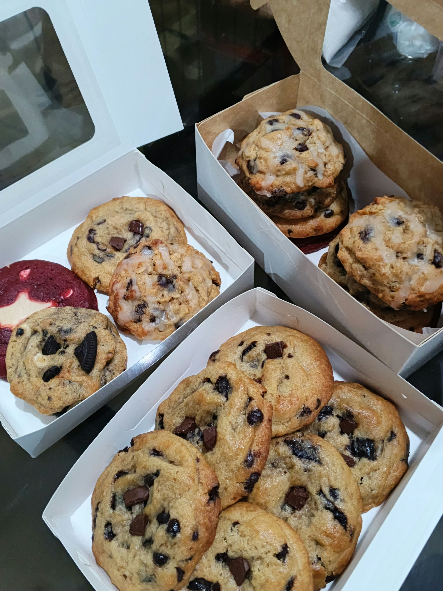
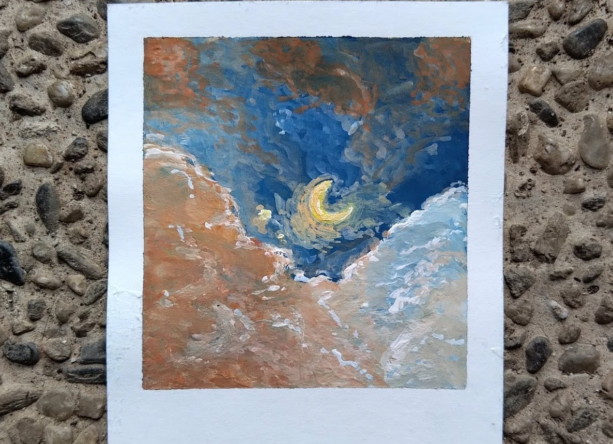
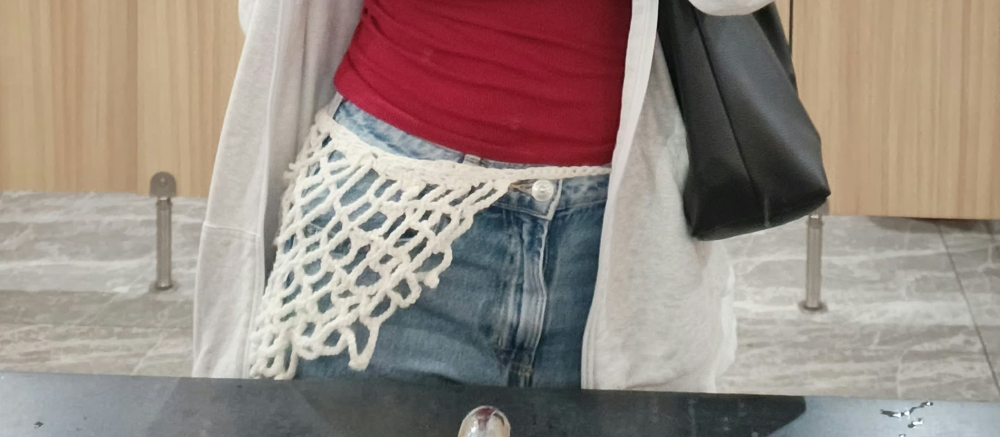

About me
I am currently a 2nd year Bachelor of Arts in Multimedia Studies (BAMS) student in University of the Philippines Open University (UPOU). I am 20 years old, and currently living in Antipolo City, Rizal. I recently opened a small homemade cookie business called "Janelle's Homemade Cookies". Gratefully enjoying the journey of being a UP student and a small business owner.
Things I love
- Watching anime and sitcoms
- Baking cookies
- Playing games like "Valorant", "League of Legends", and "Stardew Valley"
- Crocheting simple keychains
- Olivia Rodrigo's new album, "you seem pretty sad for a girl so in love"
Passion Projects

Janelle's Homemade Cookies
One of my recent passion projects is starting my own small homemade cookie business. What started as an interest in baking has grown into something I enjoy sharing with others. Through this, I get to explore my creativity, learn new things, and share my cookie creations.

The Lonely Moon
This is a gouache painting I made featuring a moon surrounded by large, crowded clouds. It represents the feeling of loneliness despite being surrounded by others. I wanted to portray how someone can still feel alone even when there are people around them.

Crocheted Web Bandana
This was my first crochet project, which I made in honor of the new Spider-Man movie. I enjoyed learning the process and creating something with my own hands. It also encouraged me to explore more crochet projects.